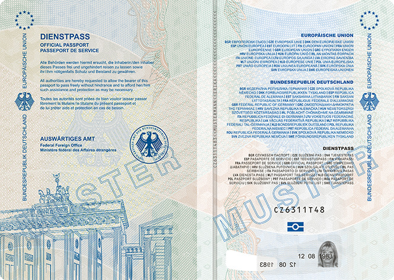
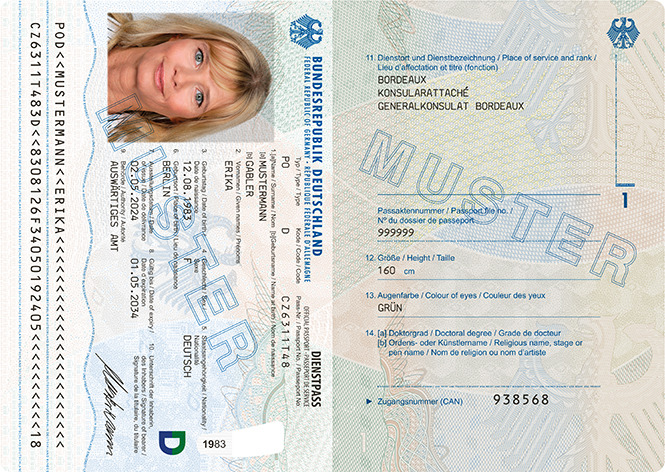
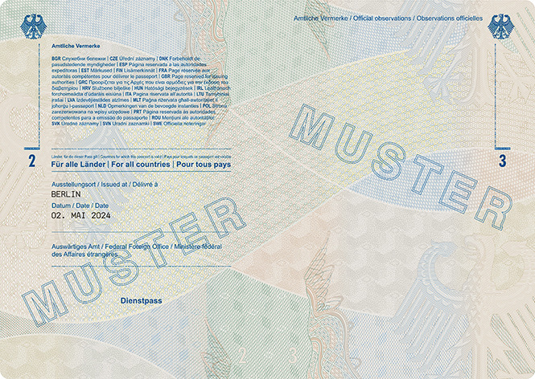
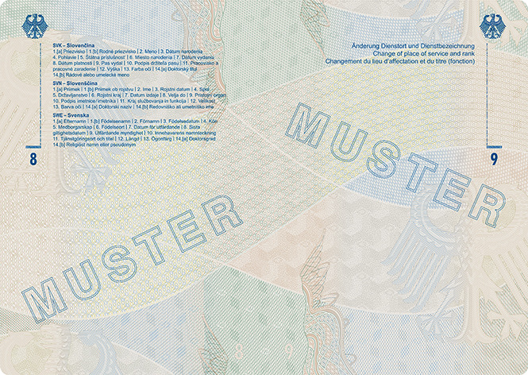
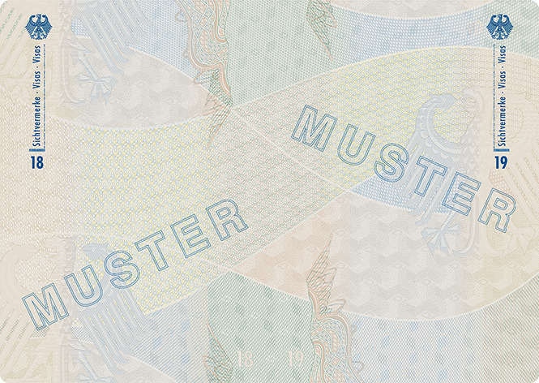
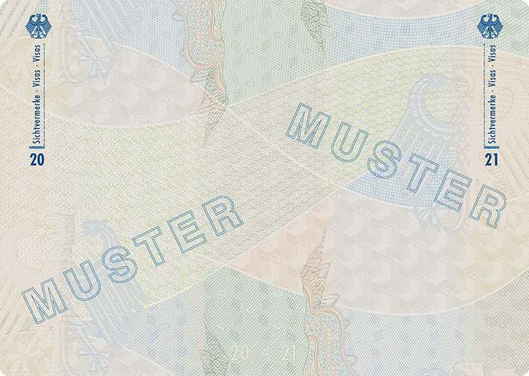
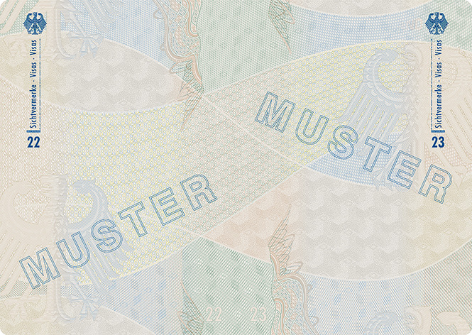
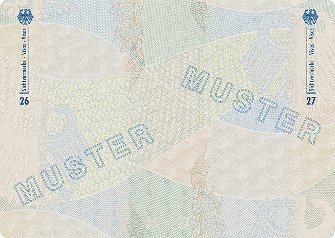
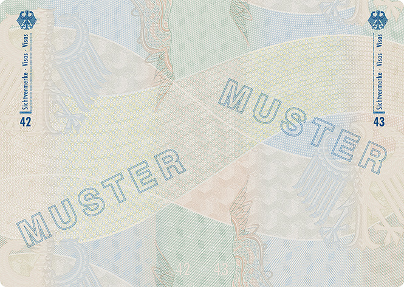

(Fundstelle: BGBl. 2024 I Nr. 125)
| Dienstpass | Vorsatz und Passkartentitelseite |

| Dienstpass | Passkartendatenseite und Passbuchinnenseite 1 |

Die Seiten 1 bis 48 sowie der hintere Einband
werden am unteren Rand mit der Seriennummer perforiert.
| Dienstpass | Passbuchinnenseiten 2 und 3 |

| Dienstpass | Passbuchinnenseiten 4 und 5 |
| Dienstpass | Passbuchinnenseiten 6 und 7 |
| Dienstpass | Passbuchinnenseiten 8 und 9 |

| Dienstpass | Passbuchinnenseiten 10 und 11 |
| Dienstpass | Passbuchinnenseiten 12 und 13 |
| Dienstpass | Passbuchinnenseiten 14 und 15 |
| Dienstpass | Passbuchinnenseiten 16 und 17 |
| Dienstpass | Passbuchinnenseiten 18 und 19 |

| Dienstpass | Passbuchinnenseiten 20 und 21 |

| Dienstpass | Passbuchinnenseiten 22 und 23 |

| Dienstpass | Passbuchinnenseiten 24 und 25 |
| Dienstpass | Passbuchinnenseiten 26 und 27 |

| Dienstpass | Passbuchinnenseiten 28 und 29 |
| Dienstpass | Passbuchinnenseiten 30 und 31 |
| Dienstpass | Passbuchinnenseiten 32 und 33 |
| Dienstpass | Passbuchinnenseiten 34 und 35 |
| Dienstpass | Passbuchinnenseiten 36 und 37 |
| Dienstpass | Passbuchinnenseiten 38 und 39 |
| Dienstpass | Passbuchinnenseiten 40 und 41 |
| Dienstpass | Passbuchinnenseiten 42 und 43 |

| Dienstpass | Passbuchinnenseiten 44 und 45 |
| Dienstpass | Passbuchinnenseiten 46 und 47 |
| Dienstpass | Passbuchinnenseite 48 und Vorsatz des hinteren Einbandes |